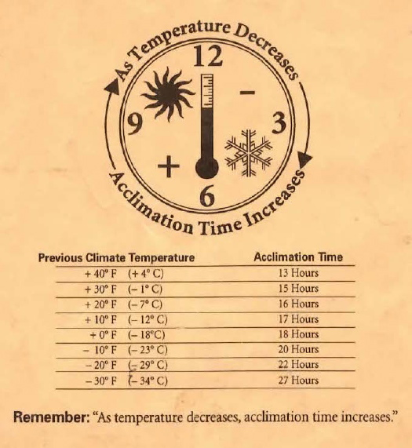

|
|
Hard drive temperature acclimationWhen hard drive temperatures fall below 50° F, drives can be damaged by condensation when starting up. Before powering on, give drives sufficient time to warm up. How long? The usual advice now is to let drives warm up to room temperature, but older drives may take longer. The following chart was once included with drives shipped from APS Technologies:  |